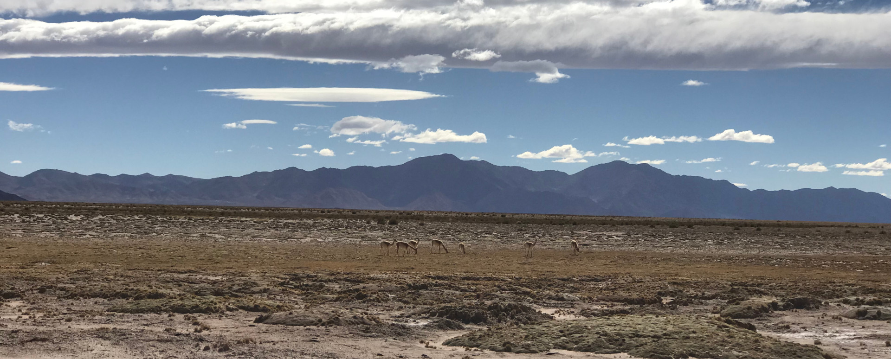
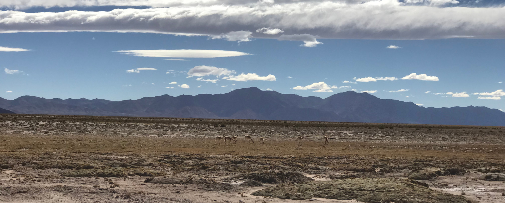

HISTORY
Main Events
| 1480 | The Incas conquer northwestern Argentina. |
| 1523 | The Spanish Empire. Spaniard Juan Díaz de Solis claims the Río de la Plata for Spain. |
| 1580 | Permanent colony re-established by Spain on the site of Buenos Aires as part of the Viceroyalty of Peru; initial settlement was primarily overland from Peru |
| 1609 | First Jesuit missions to the Guaraní founded in the Upper Paraná area |
| 1680 | The Portuguese established a trading post across the Rio de la Plata from Buenos Aires |

| 1806 | British invasions of the Río de la Plata unsuccessfully attempt to establish control over Spain's southern colonies as part of the Napoleonic Wars. Spanish troops offer no defence but British repelled by local civilians and militias (to 1807) |
| 1810 | News of Napoleon's invasion of Spain caused a power vacuum in Buenos Aires leading to a series of events known as the May Revolution |
| 1812 | Second Triumvirate of Nicolás Rodriguez Peña, Antonio Álvarez Jonte and Juan José Paso replaced First Triumvirate |
| 1831 | Argentine Governor of the Falkland Islands Luis Vernet is expelled by USS Lexington following his seizure of United States interests. New governor murdered in 1832 mutiny |
| 1853 | Constitution of Argentina agreed by assembly in Santa Fe, creating modern system of government |
| 1864 | Start of War of the Triple Alliance between Paraguay and the Triple Alliance of Argentina, Brazil and Uruguay, leading to utter defeat of Paraguay by 1870 |
| 1878 | Commencement of the Conquest of the Desert against indigenous inhabitants of the south led by Julio Argentino Roca; final surrender by 1884 |
| 1890 | The Panic of 1890 brought the Baring Brothers bank in London close to collapse after disastrous investments in Argentina |

Battle of Salta
Learn MoreBattle of Salta
The Battle of Salta took place on February 20, 1813 on the plains of Castañares, north of the present-day Argentine city of Salta, during the Argentine War of Independence. The Army of the North, under the command of general Manuel Belgrano, defeated for the second time the royalist troops of general Pío de Tristán, after their victory in the previous September at the Battle of Tucumán. The unconditional surrender of the royalist troops ensured Argentine control over most of the northern territories of the former Viceroyalty of the Río de la Plata.F
| 1912 | Sáenz Peña Law introduces universal, secret and compulsory male suffrage, end of the Generation of '80 |
| 1918 | Students strikes and demonstrations enforce the university reform of shared powers between teachers, graduates and students |
| 1930 | Military coup deposed Yrigoyen, starting the 'Infamous Decade' |
| 1943 | 'National Revolution' led by nationalist military officers including Colonel Juan Perón; ensured continued non-intervention in World War II |
| 1945 | Argentina enters World War II on the side of the Allies and admitted as founding member of United Nations |
| 1952 | Death of Eva Perón |
| 1969 | In the Cordobazo popular protests of May 1969, thousands of citizens routed the army and police and took control of Córdoba for two days |

Battle of Tucuman
Learn MoreBattle of Tutuman
The Battle of Tucumán was a battle fought on 24 and 25 September 1812 near the Argentine city of San Miguel de Tucumán, during the Argentine War of Independence. The Army of the North, commanded by General Manuel Belgrano, defeated the royalist troops commanded by General Pío de Tristán, who had a two-to-one advantage in numbers, halting the royalist advance on Argentina's northwest. Together with the Battle of Salta, on 20 February 1813, the victory at Tucumán allowed the Argentine troops to reaffirm the borders under their control.

Pucara de Tilcara
Pucará de Tilcara is an archaeological site located in the Quebrada de Humahuaca, a narrow mountain valley in northwest Argentina. The settlement was built on a small hill overlooking the Río Grande de Jujuy, with steep sides and a gently sloping summit. It is thought to have first been occupied in the tenth century A.D. During the fifteenth century, the expansion of the powerful Inca Empire into this region resulted in significant cross-cultural exchange. The Spanish arrived in the valley in 1536, drawn by the route it provided to the important silver mining town of Potosí, but they did not gain control of the area until 1595. The settlement was later abandoned and looted for building materials.
Ancient Buildings
Many buildings have been carefully reconstructed, including the doors made of cactus wood and the ceiling consisting of cactus wood as structure and bamboo as actual coverage. Not all historians agree on this reconstruction, contesting above all the fact that at that time the bamboo was completely unknown in this part of the world, since it was imported later.

Pueblos
Many buildings have been carefully reconstructed, including the doors made of cactus wood and the ceiling consisting of cactus wood as structure and bamboo as actual coverage. Not all historians agree on this reconstruction, contesting above all the fact that at that time the bamboo was completely unknown in this part of the world, since it was imported later.
Tilcara
This town of Jujuy Province has many historical and natural attractions, such as Humahuaca's wonderful Gully and the presence of many Indian fortresses, demonstrating the Inca influence existing in the zone. Besides many archaeological remains, as cave paintings
Find us on Social Media: